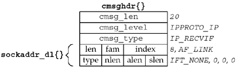

| [ Team LiB ] |
|
22.2 Receiving Flags, Destination IP Address, and Interface IndexHistorically, sendmsg and recvmsg have been used only to pass descriptors across Unix domain sockets (Section 15.7), and even this was rare. But the use of these two functions is increasing for two reasons:
As an example of recvmsg, we will write a function named recvfrom_flags, which is similar to recvfrom but also returns the following:
To return the last two items, we define the following structure in our unp.h header:
struct unp_in_pktinfo {
struct in_addr ipi_addr; /* destination IPv4 address */
int ipi_ifindex; /* received interface index */
};
We have purposely chosen the structure name and member names to be similar to the IPv6 in6_pktinfo structure that returns the same two items for an IPv6 socket (Section 22.8). Our recvfrom_flags function will take a pointer to an unp_in_pktinfo structure as an argument, and if this pointer is non-null, we will return the structure through the pointer. A design problem with this structure is what to return if the IP_RECVDSTADDR information is not available (i.e., the implementation does not support the socket option). The interface index is easy to handle because a value of 0 can indicate that the index is not known. But all 32-bit values for an IP address are valid. What we have chosen is to return a value of all zeros (0.0.0.0) as the destination address when the actual value is not available. While this is a valid IP address, it is never allowed as the destination IP address (RFC 1122 [Braden 1989]); it is valid only as the source IP address when a host is bootstrapping and does not yet know its IP address.
We now show the first half of our recvfrom_flags function in Figure 22.1. This function is intended to be used with a UDP socket. Figure 22.1 recvfrom_flags function: calls recvmsg.advio/recvfromflags.c
1 #include "unp.h"
2 #include <sys/param.h> /* ALIGN macro for CMSG_NXTHDR() macro */
3 ssize_t
4 recvfrom_flags(int fd, void *ptr, size_t nbytes, int *flagsp,
5 SA *sa, socklen_t *salenptr, struct unp_in_pktinfo *pktp)
6 {
7 struct msghdr msg;
8 struct iovec iov[1];
9 ssize_t n;
10 #ifdef HAVE_MSGHDR_MSG_CONTROL
11 struct cmsghdr *cmptr;
12 union {
13 struct cmsghdr cm;
14 char control[CMSG_SPACE(sizeof(struct in_addr)) +
15 CMSG_SPACE(sizeof(struct unp_in_pktinfo))];
16 } control_un;
17 msg.msg_control = control_un.control;
18 msg.msg_controllen = sizeof(control_un.control);
19 msg.msg_flags = 0;
20 #else
21 bzero(&msg, sizeof(msg)); /* make certain msg_accrightslen = 0 */
22 #endif
23 msg.msg_name = sa;
24 msg.msg_namelen = *salenptr;
25 iov[0].iov_base = ptr;
26 iov[0].iov_len = nbytes;
27 msg.msg_iov = iov;
28 msg.msg_iovlen = 1;
29 if ( (n = recvmsg(fd, &msg, *flagsp)) < 0)
30 return (n);
31 *salenptr = msg.msg_namelen; /* pass back results */
32 if (pktp)
33 bzero(pktp, sizeof(struct unp_in_pktinfo)); /* 0.0.0.0, i/f = 0 */
Include files1–2 The CMSG_NXTHDR macro requires the <sys/param.h> header. Function arguments3–5 The function arguments are similar to recvfrom, except the fourth argument is now a pointer to an integer flag (so that we can return the flags returned by recvmsg) and the seventh argument is new: It is a pointer to an unp_in_pktinfo structure that will contain the destination IPv4 address of the received datagram and the interface index on which the datagram was received. Implemenation differences10–22 When dealing with the msghdr structure and the various MSG_xxx constants, we encounter lots of differences between various implementations. Our way of handling these differences is to use C's conditional inclusion feature (#ifdef). If the implementation supports the msg_control member, space is allocated to hold the values returned by both the IP_RECVDSTADDR and IP_RECVIF socket options, and the appropriate members are initialized. Fill in msghdr structure and call recvmsg23–33 A msghdr structure is filled in and recvmsg is called. The values of the msg_namelen and msg_flags members must be passed back to the caller; they are value-result arguments. We also initialize the caller's unp_in_pktinfo structure, setting the IP address to 0.0.0.0 and the interface index to 0. Figure 22.2 shows the second half of our function. 34–37 If the implementation does not support the msg_control member, we just set the returned flags to 0 and return. The remainder of the function handles the msg_control information. Return if no control information38–41 We return the msg_flags value and then return to the caller if: (i) there is no control information; (ii) the control information was truncated; or (iii) the caller does not want an unp_in_pktinfo structure returned. Process ancillary data42–43 We process any number of ancillary data objects using the CMSG_FIRSTHDR and CMSG_NXTHDR macros. Process IP_RECVDSTADDR44–51 If the destination IP address was returned as control information (Figure 14.9), it is returned to the caller. Process IP_RECVIF52–59 If the index of the received interface was returned as control information, it is returned to the caller. Figure 22.3 shows the contents of the ancillary data object that is returned. Figure 22.2 recvfrom_flags function: returns flags and destination address.advio/recvfromflags.c
34 #ifndef HAVE_MSGHDR_MSG_CONTROL
35 *flagsp = 0; /* pass back results */
36 return (n);
37 #else
38 *flagsp = msg.msg_flags; /* pass back results */
39 if (msg.msg_controllen < sizeof(struct cmsghdr) ||
40 (msg.msg_flags & MSG_CTRUNC) || pktp == NULL)
41 return (n);
42 for (cmptr = CMSG_FIRSTHDR(&msg); cmptr != NULL;
43 cmptr = CMSG_NXTHDR(&msg, cmptr)) {
44 #ifdef IP_RECVDSTADDR
45 if (cmptr->cmsg_level == IPPROTO_IP &&
46 cmptr->cmsg_type == IP_RECVDSTADDR) {
47 memcpy(&pktp->ipi_addr, CMSG_DATA(cmptr),
48 sizeof(struct in_addr));
49 continue;
50 }
51 #endif
52 #ifdef IP_RECVIF
53 if (cmptr->cmsg_level == IPPROTO_IP && cmptr->cmsg_type == IP_RECVIF) {
54 struct sockaddr_dl *sdl;
55 sdl = (struct sockaddr_dl *) CMSG_DATA(cmptr);
56 pktp->ipi_ifindex = sdl->sdl_index;
57 continue;
58 }
59 #endif
60 err_quit("unknown ancillary data, len = %d, level = %d, type = %d",
61 cmptr->cmsg_len, cmptr->cmsg_level, cmptr->cmsg_type);
62 }
63 return (n);
64 #endif /* HAVE_MSGHDR_MSG_CONTROL */
65 }
Figure 22.3. Ancillary data object returned for IP_RECVIF. Recall the datalink socket address structure in Figure 18.1. The data returned in the ancillary data object is one of these structures, but the three lengths are 0 (name length, address length, and selector length). Therefore, there is no need for any of the data that follows these lengths, so the size of the structure should be 8 bytes, not the 20 that we show in Figure 18.1. The information we return is the interface index. Example: Print Destination IP Address and Datagram-Truncated FlagTo test our function, we modify our dg_echo function (Figure 8.4) to call recvfrom_flags instead of recvfrom. We show this new version of dg_echo in Figure 22.4. Change MAXLINE2–3 We remove the existing definition of MAXLINE that occurs in our unp.h header and redefine it to be 20. We do this to see what happens when we receive a UDP datagram that is larger than the buffer that we pass to the input function (recvmsg in this case). Set IP_RECVDSTADDR and IP_RECVIF socket options14–21 If the IP_RECVDSTADDR socket option is defined, it is turned on. Similarly, the IP_RECVIF socket option is turned on. Figure 22.4 dg_echo function that calls our recvfrom_flags function.advio/dgechoaddr.c
1 #include "unpifi.h"
2 #undef MAXLINE
3 #define MAXLINE 20 /* to see datagram truncation */
4 void
5 dg_echo(int sockfd, SA *pcliaddr, socklen_t clilen)
6 {
7 int flags;
8 const int on = 1;
9 socklen_t len;
10 ssize_t n;
11 char mesg[MAXLINE], str[INET6_ADDRSTRLEN], ifname[IFNAMSIZ];
12 struct in_addr in_zero;
13 struct unp_in_pktinfo pktinfo;
14 #ifdef IP_RECVDSTADDR
15 if (setsockopt(sockfd, IPPROTO_IP, IP_RECVDSTADDR, &on, sizeof(on)) < 0)
16 err_ret("setsockopt of IP_RECVDSTADDR");
17 #endif
18 #ifdef IP_RECVIF
19 if (setsockopt(sockfd, IPPROTO_IP, IP_RECVIF, &on, sizeof(on)) < 0)
20 err_ret("setsockopt of IP_RECVIF");
21 #endif
22 bzero(&in_zero, sizeof(struct in_addr)); /* all 0 IPv4 address */
23 for ( ; ; ) {
24 len = clilen;
25 flags = 0;
26 n = Recvfrom_flags(sockfd, mesg, MAXLINE, &flags,
27 pcliaddr, &len, &pktinfo);
28 printf("%d-byte datagram from %s", n, Sock_ntop(pcliaddr, len));
29 if (memcmp(&pktinfo.ipi_addr, &in_zero, sizeof(in_zero)) != 0)
30 printf(", to %s", Inet_ntop(AF_INET, &pktinfo.ipi_addr,
31 str, sizeof(str)));
32 if (pktinfo.ipi_ifindex > 0)
33 printf(", recv i/f = %s",
34 If_indextoname(pktinfo.ipi_ifindex, ifname));
35 #ifdef MSG_TRUNC
36 if (flags & MSG_TRUNC)
37 printf(" (datagram truncated)");
38 #endif
39 #ifdef MSG_CTRUNC
40 if (flags & MSG_CTRUNC)
41 printf(" (control info truncated)");
42 #endif
43 #ifdef MSG_BCAST
44 if (flags & MSG_BCAST)
45 printf(" (broadcast)");
46 #endif
47 #ifdef MSG_MCAST
48 if (flags & MSG_MCAST)
49 printf(" (multicast)");
50 #endif
51 printf("\n");
52 Sendto(sockfd, mesg, n, 0, pcliaddr, len);
53 }
54 }
Read datagram, print source IP address and port24–28 The datagram is read by calling recvfrom_flags. The source IP address and port of the server's reply are converted to presentation format by sock_ntop. Print destination IP address29–31 If the returned IP address is not 0, it is converted to presentation format by inet_ntop and printed. Print name of received interface32–34 If the returned interface index is not 0, its name is obtained by calling if_indextoname and it is printed. Test various flags35–51 We test four additional flags and print a message if any are on. |
| [ Team LiB ] |
|